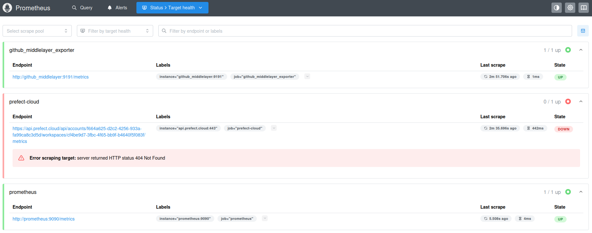
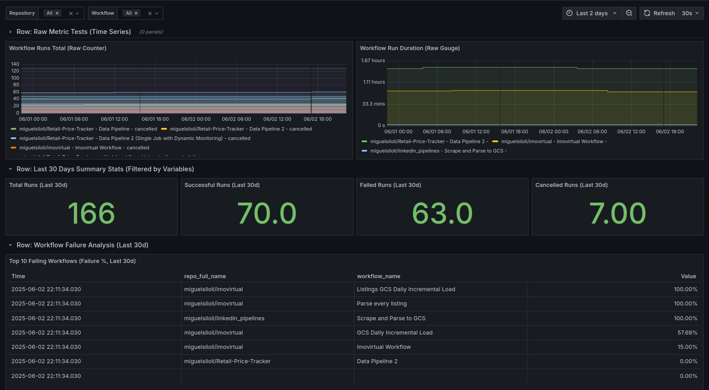

Prometheus-Grafana overview#
Why do we need to monitor CI/CD and data pipelines?
Slow feedback loops: feedback mainly comes from technical support, client feedback or cascading issues.
Detect failures preemptively: by seting up SLI’s we can spot and prevent failures before they even happen
Understanding resource consumption and identifying bottlenecks.
Impact of pipeline health on downstream processes/products.
I’m going to apply Grafana, Prometheus, and how they’ll be used with Prefect 2.x and GitHub Actions API as a proof of concept before rolling these changes to our production use cases.
Part I: Brief stack overview#
At the heart of many robust monitoring setups lies the combination of Prometheus for collecting and storing metrics, and Grafana for visualizing and making sense of them.
1.1. Prometheus: The Metric Collector and Time-Series Database#
Aspect |
Description |
|---|---|
Purpose |
Open-source monitoring toolkit for collecting time-series metrics |
Architecture |
Pull-based model that scrapes HTTP endpoints for metrics |
Metric Types |
Counters, Gauges, Histograms, Summaries |
Query Language |
PromQL for data selection and aggregation |
Key Features |
Labels for dimensionality, Exporters for 3rd-party systems, Optional Alertmanager |
Solves |
Reliable metric collection and querying for system observability |
1.2. Grafana: The Visualization and Analytics Platform#
Aspect |
Description |
|---|---|
Purpose |
Open-source platform for creating dynamic monitoring dashboards |
Core Components |
Dashboards (collections of panels), Data Sources, Variables |
Data Sources |
Connects to Prometheus, Elasticsearch, MySQL, AWS CloudWatch, etc. |
Key Features |
Interactive panels, built-in alerting, templating, extensible plugins |
Querying |
Uses native query languages (PromQL, SQL, etc.) |
Solves |
Unified visualization platform for diverse data sources |
1.3. Basic Setup#
graph TD
A[Applications/Services] -->|Expose Metrics| B(Metrics Endpoints and Exporters)
B -->|Prometheus Scrapes| C[Prometheus Server]
C -->|Stores Time-Series Data| C
C -->|Grafana Queries PromQL| D[Grafana Server]
D -->|Renders Dashboards| E[Users Browser]
C -->|Alerts Optional| F[Alertmanager]
F -->|Notifications| G[Notification Channels Slack Email]
classDef default fill:#fff,stroke:#333,stroke-width:2px;
Part II: Monitoring Prefect 2.x and GitHub Actions Pipelines#
2. The Implemented Solution Architecture#
Which indicators do we need?
To tackle these observability challenges, we designed a solution centered around Prometheus and Grafana, with a custom component to bridge the gap with the GitHub API. Prefect Cloud’s native metrics endpoint is also a target for future integration.
graph TB
subgraph HOST["🖥️ Host VM (e.g., GCP Compute Engine)"]
subgraph DOCKER["🐳 Docker Compose Network"]
GM["<b>github_middlelayer</b><br/><b>Container</b>"]
PROM["<b>Prometheus</b><br/><b>Container</b>"]
GRAF["<b>Grafana</b><br/><b>Container</b>"]
end
end
GH[GitHub API<br/>Workflow Data]
PC[Prefect Cloud API<br/>e.g., /api/.../metrics]
%% Main flow
GH -->|HTTP API Calls<br/>Authenticated by PAT| GM
GM -->|Exposes /metrics<br/>:9191/metrics| PROM
PROM -->|PromQL Queries<br/>Data Source| GRAF
%% Additional functionality
GM -.->|"- Fetches GitHub data<br/>- Converts to Prometheus metrics<br/>- Exposes /metrics"| GM
PROM -.->|"Metrics Storage<br/>& PromQL Engine"| PROM
GRAF -.->|"User UI<br/>& Alerts"| GRAF
%% Optional Prefect path
PC -.->|Scrapes /metrics<br/>Authenticated by Key| PROM
%% Styling
classDef container fill:#2e7d32,stroke:#1b5e20,stroke-width:3px,color:#ffffff
classDef api fill:#f3e5f5,stroke:#4a148c,stroke-width:2px
classDef optional fill:#fff3e0,stroke:#e65100,stroke-width:2px,stroke-dasharray: 5 5
classDef hostvm fill:#bbdefb,stroke:#1976d2,stroke-width:2px
classDef dockernet fill:#c8e6c9,stroke:#388e3c,stroke-width:2px
class GM,PROM,GRAF container
class GH,PC api
class PC optional
class HOST hostvm
class DOCKER dockernet
Filesystem structure
/home/miguel/Projects/grafana+prometheus/
├── project.html
├── project.md
└── monitoring-stack/
├── docker-compose.yml
├── package.json
├── package-lock.json
├── github_middlelayer/
│ ├── app.py
│ ├── Dockerfile
│ └── requirements.txt
├── grafana_provisioning/
│ ├── dashboards/
│ │ ├── dashboard_provider.yml
│ │ └── github_actions_overview.json
│ └── datasources/
│ └── datasource.yml
└── prometheus_config/
└── prometheus.yml
Explanation of Architecture Components:
| Component | Explanation |
|---|---|
| Data Sources: |
GitHub API: This is our primary source for CI/CD pipeline execution data. We query it for workflow run statuses (success, failure, cancelled), durations, names, and associated repository information. Prefect Cloud API /metrics:
|
github_middlelayer (Custom Prometheus Exporter): |
Role & Necessity: Since Prometheus cannot directly parse the JSON responses from the GitHub API, this custom Flask application (served by Gunicorn) acts as an essential |
| Prometheus Container: |
Scraping: Configured via prometheus.yml to scrape the /metrics endpoint of our github_middlelayer service and (eventually) the Prefect Cloud metrics endpoint.
|
| Grafana Container: |
Data Source: Connects to our Prometheus instance (using the internal Docker network service name http://prometheus:9090).
|
| Docker Compose: |
Orchestration: We use Docker Compose to define, configure, and run our multi-container application (Prometheus, Grafana, github_middlelayer) on a single host Virtual Machine.
|
| Host VM (e.g., GCP Compute Engine): | Provides the underlying compute resources for running our Dockerized monitoring stack. |
3. Configuration Deep Dive#
Setting up this stack involves configuring each component to work in concert.
3.1.
github_middlelayer(Flask App) Metrics: Our custom exporter is designed to expose several key metrics:github_actions_workflow_runs_total_beta_total(Counter): Tracks the total number of completed GitHub Actions workflow runs. It has labels forrepo_full_name,workflow_name,status(always “completed” for this counter as implemented), andconclusion(e.g., “success”, “failure”, “cancelled”). This allows us to calculate rates and trends of different outcomes.github_actions_workflow_run_duration_seconds_beta(Gauge): Reports the duration of the most recently completed run for each workflow, labeled byrepo_full_name,workflow_name, andconclusion. This helps track performance.github_exporter_api_requests_total_beta&github_exporter_api_request_errors_total_beta(Counters): Track total API calls and errors encountered by the exporter.
3.2. Prometheus Configuration (
prometheus.yml): Thescrape_configssection inprometheus.ymlis where we tell Prometheus what to monitor.
global:
scrape_interval: 180s
evaluation_interval: 180s
scrape_configs:
- job_name: 'prefect-cloud'
scheme: https
authorization:
type: Bearer
credentials: ""
static_configs:
- targets: ['api.prefect.cloud']
relabel_configs:
- source_labels: [__address__]
target_label: __address__
replacement: "api.prefect.cloud:443"
- source_labels: [__address__]
target_label: __metrics_path__
replacement: "/api/accounts//workspaces/metrics"
- job_name: 'prometheus'
static_configs:
- targets: ['prometheus:9090']
- job_name: 'github_middlelayer_exporter'
scrape_interval: 180s # Or match your EXPORTER_SCRAPE_INTERVAL if desired, but can be different
static_configs:
# Docker Compose will resolve 'github_middlelayer' to the container's IP
# on the 'monitor-net' network.
- targets: ['github_middlelayer:9191']
3.3. Grafana Provisioning: To ensure our Grafana setup is repeatable and version-controlled, we utilize its provisioning capabilities:
Data Sources (
grafana_provisioning/datasources/datasource.yml): A YAML file defines the Prometheus data source, specifying its name, type, and URL (http://prometheus:9090). Grafana automatically configures this on startup.Dashboards (
grafana_provisioning/dashboards/):A
dashboard_provider.ymltells Grafana to load dashboard definitions from a specific directory.
3.4. Other Important Considerations:
Scrape Intervals: We’ve set Prometheus to scrape the
github_middlelayerevery 30 seconds. The exporter itself polls the GitHub API less frequently (e.g., every 5 minutes, configurable viaEXPORTER_SCRAPE_INTERVAL) to respect API limits. This decoupling is important.GitHub API Limitations & Mechanics:
Rate Limits: The GitHub API has rate limits (typically 5000 requests/hour for an authenticated PAT). Our exporter logs the remaining limit and exposes it as a metric. For many repositories or very frequent polling, this can become a constraint.
Pagination: The API returns paginated results (e.g., 30-100 items per page). The exporter handles this by following
Linkheaders to fetch all necessary data.
API Depletion Mitigation & Caching Suggestion: Currently, our exporter makes fresh API calls each
EXPORTER_SCRAPE_INTERVAL. To further reduce API load and improve resilience, a caching layer could be introduced within thegithub_middlelayer.Options:
External Persistent Cache (e.g., Redis): More robust, survives exporter restarts, but adds another service to manage.
4. Conclusions: Visualizing Pipeline Health in Grafana#
Prometheus:
Prometheus setting.

[Screenshot of Stacked Bar Chart: Run Counts by Conclusion, Stacked by Project]

This is just an example. Note that github_actions_workflow_runs_total_beta_total in the middleware api is not well implemented because there are more workflow states than those (running, scheduled), hence the fact total workflows sum doesn’t match.